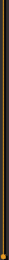
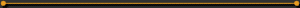

-->
ABOUT : INTRO


Gangsters is a teamplay-driven addon based on the source-release
of Action Quake, the most
popular mod for Quake2 ever. Gangsters is not a stand-alone product
in that sense, it's more like an extension of Action Quake in itself,
developed by fans and players. Call it the next step in the massively
growing online gaming-community since it's really a mod of a mod -
third-generation Quake2. How's that for popularity in a game? And
what does that say about the popularity of the Action Quake mod?
This is really just our tribute to that mod.
Two gangs/teams will fight each other and each gang will have
a leader (gangsterboss/crimelord/criminal-mastermind). This leader
will have a different skin, and/or model than the rest of his team,
and will be highly noticeable to both his own gang and the rival gang.
Who will become the leader is currently chosen randomly from the
server, and who has been picked will be announced in the console at
the beginning of each round. It's important to know if you become the
gangleader, as everyone else will clearly see it, and expect a certain
behaviour from you. Another pointer is that the gangleader begins
play with limited equipment, regardless of what items/weapons you
previously chose.
Now that we have a group of thugs and their employer, it's all
set for one helluva gangster movie. A gang can only win by
accomplishing either one of two goals. The first, and probably
"easiest" goal is to execute the opposing gang's boss. But beware, as
this will also happen to your gang, expect the gangsterboss to be
heavily guarded. Give it some thought before we continue -- a sniper
bullet, or a well placed shot to the head of your dear boss will
terminate your whole team's effort, no matter how good. You're all
hired to protect him, without him you won't get paid for all the
dirty-work. That being said, don't let it happen.

Internet Explorer 5.0 or Netscape 4.5 required at 800x600, 16bit color
Design © 1999 Per 'Ellusion' Nyhaug, E-Design